CS184/284A Spring 2025 Homework 3 Write-Up
Link to webpage: cal-cs184-student.github.io/hw-webpages-yutongxie58/hw3/index.html
Link to GitHub repository: github.com/cal-cs184-student/hw3-pathtracer-yutong_x

Overview
In this homework, I implemented a basic path tracer step by step, starting from ray generation and primitive intersection, then improving performance using BVH acceleration, and finally adding realistic lighting effects through global illumination.
In Part 1, I implemented ray generation and ray-shape intersection for triangles and spheres so the renderer could correctly detect visible surfaces. In Part 2, I built a BVH acceleration structure to significantly reduce the number of intersection tests and improve rendering speed for complex scenes. In Part 3, I implemented diffuse reflection and two methods of computing direct lighting: uniform hemisphere sampling and importance sampling over light sources. Importance sampling produced much less noisy results since samples were focused toward actual light sources.
In Part 4, I implemented global illumination by recursively tracing additional bounces of light, allowing indirect lighting effects. I also implemented Russian Roulette termination with a termination probability of 0.3 to reduce unnecessary computation while maintaining an unbiased estimate. In Part 5, I implemented adaptive sampling so that pixels that converged quickly used fewer samples, while noisier regions automatically received more samples.
Overall, this assignment helped me connect the math from lecture to an actual rendering pipeline, and understand how different sampling strategies affect rendering quality and performance. It was rewarding to see the final rendered images come together after implementing each component of the path tracer!
Part 1: Ray Generation and Scene Intersection
Walk through the ray generation and primitive intersection parts of the rendering pipeline.
In this part, I implemented the first main steps of the path tracing pipeline: generating camera rays, tracing them through the scene, and checking for intersections with primitives. For each pixel, the renderer generates one or more rays starting from the camera and passing through sampled positions inside that pixel. To do this, I mapped normalized image coordinates to the sensor plane at z = -1 in camera space, used the camera's horizontal and vertical field of view to determine the sensor bounds, and transformed the ray direction into world space using the camera-to-world matrix. The ray origin is the camera position, and the ray's valid interval is initialized using the near and far clip planes.
In raytrace_pixel, I sampled each pixel
ns_aa times using random offsets inside the pixel. For each
sample, I converted the pixel coordinates into normalized coordinates in
[0, 1], generated a camera ray, and traced it through the scene using
est_radiance_global_illumination. The returned values were
summed and averaged to produce the final pixel color.
After generating a ray, the renderer tests that ray against scene
primitives. For triangles and spheres, the goal is to find whether the
ray hits the primitive and, if so, whether that hit is the closest valid
intersection seen so far. If an intersection is valid, the code updates
ray.max_t
so farther intersections can be ignored. In the full
intersect functions, the intersection record is also
updated with the hit distance, surface normal, primitive pointer, and
material.
Explain the triangle intersection algorithm you implemented in your own words.
I implemented triangle intersection using the Möller-Trumbore algorithm
from lecture. I first rewrote the triangle using one vertex and two edge
vectors, so that any point on the triangle could be described using
barycentric coordinates. Then I solved for the ray parameter
t and the barycentric coordinates of the potential hit
point. I rejected the intersection if the determinant was near zero,
which means the ray is parallel to the triangle plane. I also rejected
it if the barycentric coordinates placed the point outside the triangle,
or if the computed t value was outside the valid range of
the ray. For a valid hit, I updated ray.max_t to keep the
closest intersection. In intersect, I also used the
barycentric coordinates to interpolate the vertex normals and stored the
final hit data in the intersection structure.
Show images with normal shading for a few small .dae files.
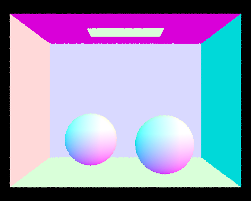
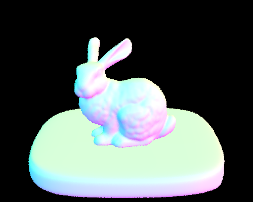
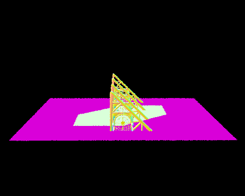
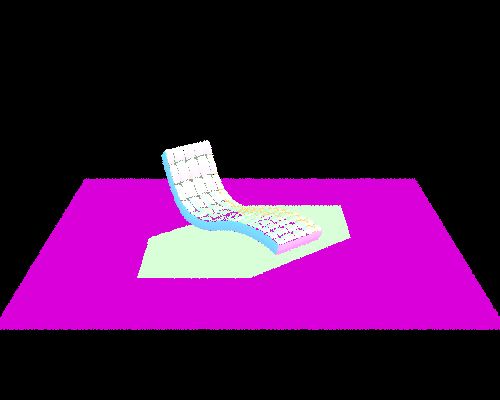
Part 2: Bounding Volume Hierarchy
Walk through your BVH construction algorithm. Explain the heuristic you chose for picking the splitting point.
I implemented BVH construction recursively. For each node, I first compute a bounding box that contains all primitives in the current range. If the number of primitives is smaller than the maximum leaf size, I stop splitting and store those primitives in a leaf node.
Otherwise, I split the primitives into two groups. To decide how to split, I compute the centroid of the bounding box of each primitive and then compute a bounding box over all centroids. I choose the axis (x, y, or z) with the largest spread of centroid positions. I then split primitives at the midpoint of that axis, assigning primitives to the left or right child depending on whether their centroid lies before or after the split point.
This heuristic is simple but works well in practice because it tends to create reasonably balanced trees and avoids very deep recursion. In the case where all centroids fall on one side of the split point, I split primitives evenly by index to avoid infinite recursion.
During rendering, each ray is first tested against the bounding box of the node. If the ray misses the box, all primitives inside that node can be skipped. Otherwise, the algorithm continues recursively until reaching a leaf node, where ray-primitive intersection tests are performed.
Show images with normal shading for a few large .dae files that you can only render with BVH acceleration.
The following scenes were rendered on my local machine using BVH acceleration. These scenes contain tens of thousands to over one hundred thousand triangles, making brute-force intersection very slow.
|
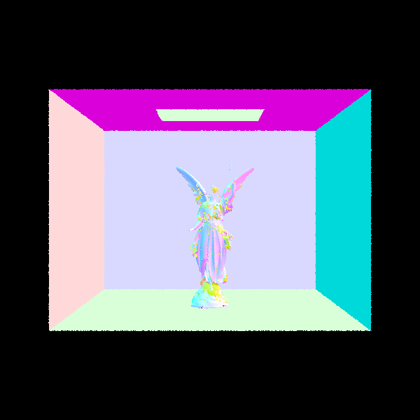 |
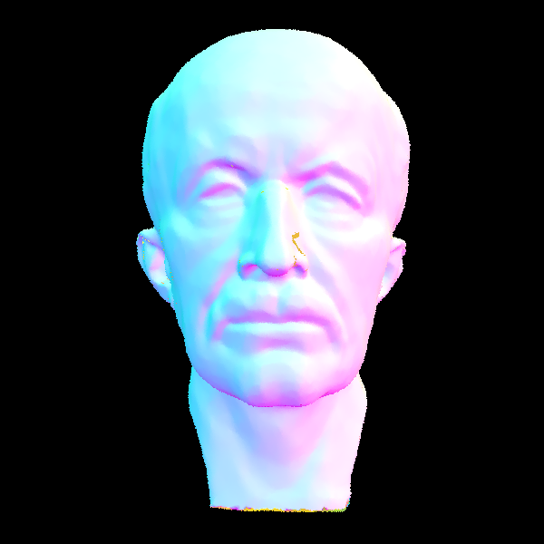 |
|
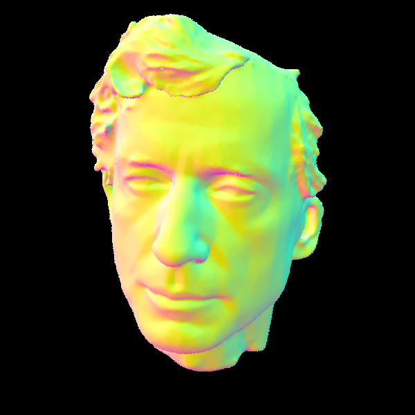 |
|
Compare rendering times on a few scenes with moderately complex geometries with and without BVH acceleration.
I compared render times on several scenes using the same settings
-t 8 -r 600 600 on my local machine.
| Scene | # Triangles | Time (no BVH) | Time (BVH) | Avg tests/ray (no BVH) | Avg tests/ray (BVH) | Speedup |
|---|---|---|---|---|---|---|
| teapot | 2,464 | 1.29 s | 0.0424 s | 279.4 | 4.74 | ~30.5× |
| peter | 40,018 | 26.87 s | 0.0355 s | 4922.7 | 4.00 | ~757× |
| CBlucy | 133,796 | 191.65 s | 0.0215 s | 20061.8 | 2.38 | ~8900× |
BVH significantly improves rendering speed for scenes with many triangles. Without BVH, each ray must test intersection with every primitive in the scene, resulting in thousands of intersection tests per ray. With BVH acceleration, rays only test intersections with primitives inside relevant bounding boxes, reducing the average number of intersection tests per ray dramatically.
Part 3: Direct Illumination
Walk through both implementations of the direct lighting function.
I implemented direct lighting in two different ways: uniform hemisphere sampling and importance sampling over lights:
For uniform hemisphere sampling, I sampled random directions uniformly over the hemisphere above the hit point. Since the BSDF is evaluated in the local coordinate system of the object, I used the local frame defined by the surface normal, where the normal points in the positive z direction. For each sampled direction, I transformed it into world space, cast a shadow ray from the hit point, and checked whether that ray hit an emitting surface. If it did, I added the contribution from that direction using the emitted radiance, the diffuse BSDF value, the cosine term, and the sampling pdf. I then averaged over all samples.
For importance sampling, instead of sampling arbitrary directions in the hemisphere, I sampled directions directly from each light source in the scene. For each light sample, I obtained the sampled incoming light direction, distance to the light, emitted radiance, and pdf. I skipped samples where the light direction was behind the surface. Then I cast a shadow ray toward the sampled light direction and only added the contribution if the ray was not blocked before reaching the light. I averaged the contributions over all samples for each light.
Show some images rendered with both implementations of the direct lighting function.
The following images were rendered using both direct lighting implementations.
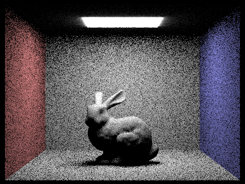
-s 16 -l 8 -H)
-s 16 -l 8)
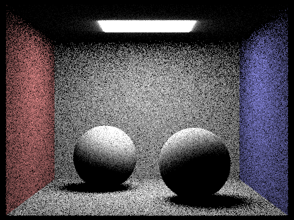
-s 16 -l 8 -H)
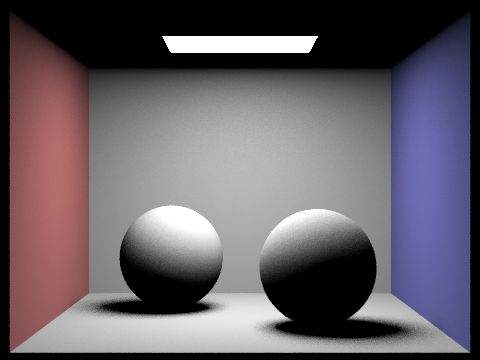
-s 16 -l 8)
Focus on one particular scene with at least one area light and compare the noise levels in soft shadows when rendering with 1, 4, 16, and 64 light rays (the -l flag) and with 1 sample per pixel (the -s flag) using light sampling, not uniform hemisphere sampling.
I used CBbunny.dae for this comparison. This scene includes
an area light and shows the soft shadow behavior clearly.
-s 1 -l 1-s 1 -l 4-s 1 -l 16-s 1 -l 64
As the number of light rays increases, the soft shadow region becomes
noticeably less noisy. With -l 1, the shadow is very
grainy. At -l 4, the noise is still visible but reduced. At
-l 16, the shadow is much cleaner, and at
-l 64, the soft shadow boundary is the smoothest among the
four renders.
Compare the results between uniform hemisphere sampling and lighting sampling in a one-paragraph analysis.
Light sampling produces much cleaner results than uniform hemisphere
sampling under the same rendering settings. In the hemisphere version,
many sampled directions do not contribute useful light because they do
not point toward the light source, so the image has more noise,
especially in the shadowed and indirectly lit regions. In contrast,
light sampling directly samples the actual light sources, so more
samples contribute meaningful lighting information. This makes the image
converge faster and gives much cleaner soft shadows. In my renders, both
CBbunny and CBspheres_lambertian looked noticeably less noisy with light
sampling than with uniform hemisphere sampling at the same
-s and -l settings.
Part 4: Global Illumination
Walk through your implementation of the indirect lighting function.
I implemented indirect lighting recursively in
at_least_one_bounce_radiance. At each hit point, I first
computed the direct lighting contribution using
one_bounce_radiance. Then, if the ray still had bounce
depth remaining, I sampled a new incoming direction from the surface
BSDF in the local coordinate frame. Since the sampled direction is
generated in object space, I transformed it into world space before
tracing the next bounce ray.
I created the bounced ray starting at the hit point with a small
EPS_F offset to avoid self-intersection, and I decreased
the ray depth by one before tracing it. If the bounced ray hit another
surface, I recursively evaluated the radiance coming from that next
intersection and multiplied it by the BSDF value, the cosine term, and
the inverse pdf. This gave the indirect lighting contribution from one
additional bounce. I added this recursive contribution to the direct
lighting term at the current surface.
In est_radiance_global_illumination, I returned the sum of
zero-bounce emission and the result of
at_least_one_bounce_radiance. I also initialized camera
rays with max_ray_depth in raytrace_pixel so
the recursion would terminate after the specified number of bounces.
Show some images rendered with global (direct and indirect) illumination. Use 1024 samples per pixel.
I rendered CBbunny.dae and
CBspheres_lambertian.dae with both direct and indirect
illumination enabled, using 1024 samples per pixel.
-s 1024 -l 4 -m 5)
-s 1024 -l 4 -m 5)
Pick one scene and compare rendered views first with only direct illumination, then only indirect illumination. Use 1024 samples per pixel.
I used CBbunny.dae for this comparison. To generate the
direct-only view, I temporarily modified
at_least_one_bounce_radiance to return only
one_bounce_radiance. To generate the indirect-only view, I
removed the direct lighting term and kept only the recursively traced
bounce contribution.
-s 1024 -l 4 -m 5)
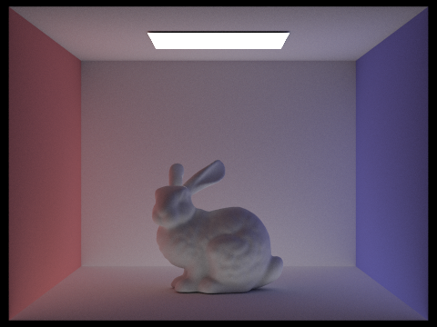
-s 1024 -l 4 -m 5)
For CBbunny.dae, render the mth bounce of light with max_ray_depth set to 0, 1, 2, 3, 4, and 5, and isAccumBounces=false. Explain in your write-up what you see for the 2nd and 3rd bounce of light, and how it contributes to the quality of the rendered image compared to rasterization. Use 1024 samples per pixel.
I rendered the individual bounce contributions for
CBbunny.dae with max_ray_depth set from 0 to 5
using 1024 samples per pixel and 4 light rays. I set
isAccumBounces=false (-o 0) so each image
shows only the contribution from the corresponding bounce.
-m 0)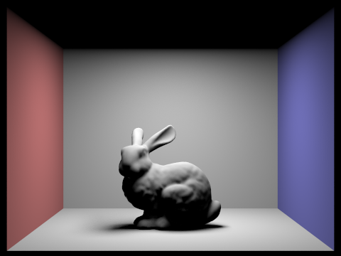
-m 1)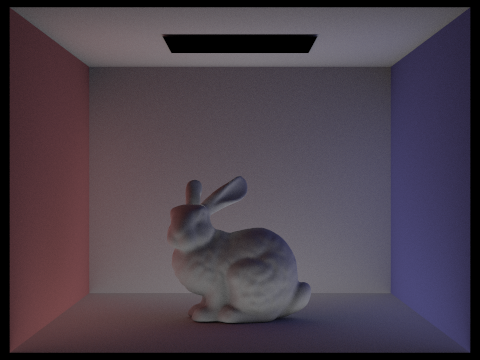
-m 2)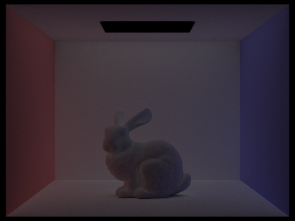
-m 3)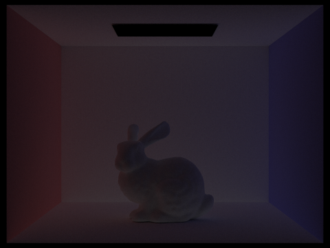
-m 4)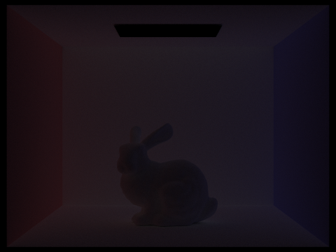
-m 5)
At m = 0, only emission from the light source is visible.
At m = 1, we see direct illumination where light reaches
surfaces without bouncing. Starting at m = 2, indirect
light becomes visible as light reflects off other surfaces before
reaching the camera. This begins to brighten areas that are not directly
exposed to the light source, especially near corners and surfaces facing
away from the light.
At m = 3, the contribution becomes more subtle but
continues to smooth the lighting and distribute energy more naturally
across the scene. These additional bounces make the image look less flat
and more realistic because light can propagate between surfaces multiple
times.
Compare rendered views of accumulated and unaccumulated bounces for CBbunny.dae with max_ray_depth set to 0, 1, 2, 3, 4, and 5. Use 1024 samples per pixel.
I compared accumulated and unaccumulated lighting contributions across
bounce depths from 0 to 5 using 1024 samples per pixel and 4 light rays.
In the accumulated version (default, -o 1), each image
includes the sum of all bounces up to the specified depth. In the
unaccumulated version (-o 0), each image isolates the
contribution from a single bounce.
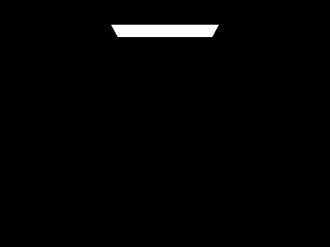
-m 0)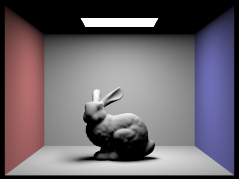
-m 1)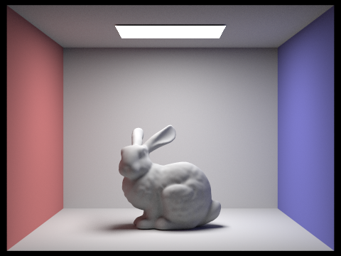
-m 2)-m 3)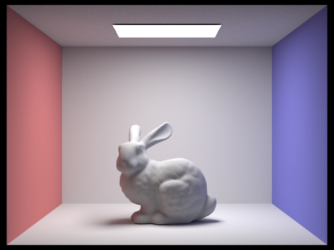
-m 4)-m 5)Compared to the unaccumulated results, the accumulated images show how additional bounces refine the lighting and contribute to the final rendered image. The first few bounces have the most significant impact on the overall brightness and visibility of surfaces, while later bounces provide smaller refinements that soften shadows and distribute light more evenly. This allows the scene to appear more natural and realistic.
For CBbunny.dae, output the Russian Roulette rendering with max_ray_depth set to 0, 1, 2, 3, 4, and 100. Use 1024 samples per pixel.
I implemented Russian Roulette to probabilistically terminate long light paths instead of always tracing rays until the maximum depth. I chose 0.3 as the termination probability, so after the first indirect bounce, each additional bounce continues with probability 0.7. When a path continues, I divide the contribution by the continuation probability to keep the estimator unbiased.
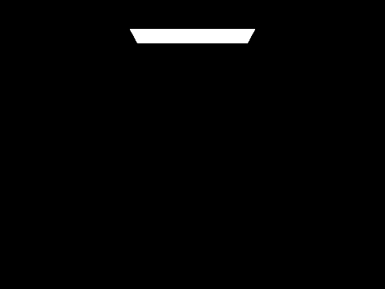
-m 0)-m 1)-m 2)-m 3)-m 4)-m 100)The images show that increasing the maximum depth beyond a few bounces does not significantly change the final appearance of the scene. Most visible lighting effects are captured within the first few bounces, while higher-order bounces contribute only small refinements. Russian Roulette allows the renderer to support large maximum depths such as 100 without tracing unnecessary long paths, while still producing a similar final image compared to a smaller max depth.
Pick one scene and compare rendered views with various sample-per-pixel rates, including at least 1, 2, 4, 8, 16, 64, and 1024. Use 4 light rays.
I used CBspheres_lambertian.dae for this comparison and
rendered it with 4 light rays while varying only the samples per pixel.
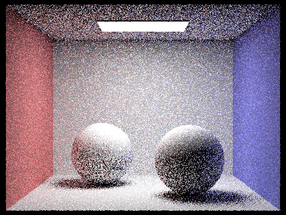
-s 1 -l 4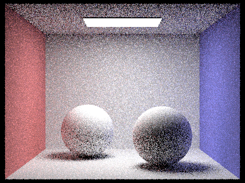
-s 2 -l 4-s 4 -l 4-s 8 -l 4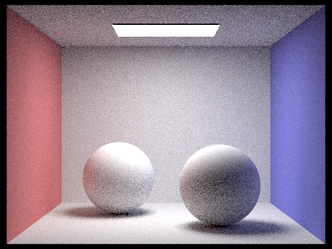
-s 16 -l 4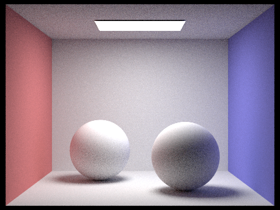
-s 64 -l 4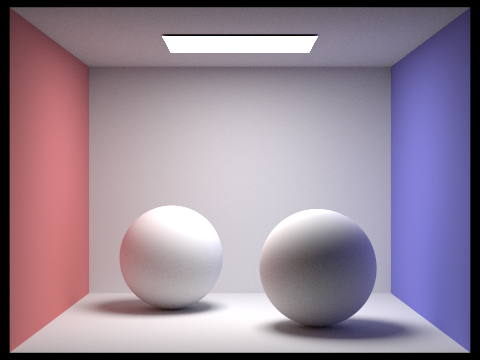
-s 1024 -l 4
With -s 1 and -s 2, the image is still very
noisy, especially in the shadowed areas and regions with indirect
lighting. As the sample count increases to 4, 8, and 16, the noise
becomes less noticeable and the lighting looks more stable. At 64
samples per pixel, most of the visible noise is gone, and at 1024
samples per pixel the image is much cleaner and close to convergence.
Part 5: Adaptive Sampling
Explain adaptive sampling. Walk through your implementation of the adaptive sampling.
Adaptive sampling reduces unnecessary work by using more samples on pixels that are still noisy and fewer samples on pixels that have already converged. Instead of always tracing the maximum number of samples per pixel, the renderer periodically checks whether the current estimate for a pixel is stable enough to stop early.
In my implementation, I modified raytrace_pixel so that
samples are traced in batches rather than always using all
ns_aa samples. For each sample, I accumulated both the
radiance and an illuminance value computed from the sample color. I kept
track of the sum of illuminance values and the sum of squared
illuminance values so I could estimate the mean and variance of the
pixel.
After every samplesPerBatch samples, I computed the current
mean illuminance and standard deviation, then used these to estimate a
95% confidence interval:
I = 1.96 * sigma / sqrt(n)
If this interval was small enough relative to the mean, specifically if
I <= maxTolerance * mu, I stopped sampling that pixel
early. Otherwise, I continued sampling until the maximum sample count
was reached. I also stored the actual number of samples used for each
pixel in sampleCountBuffer, which is later visualized in
the sampling rate image.
Pick two scenes and render them with at least 2048 samples per pixel. Show a good sampling rate image with clearly visible differences in sampling rate over various regions and pixels. Include both your sample rate image and your noise-free rendered result. Use 1 sample per light and at least 5 for max ray depth.
I used adaptive sampling on CBbunny.dae and
CBspheres_lambertian.dae, with a maximum of 2048 samples
per pixel, 1 light ray, and max ray depth 5. From the sample rate
images, we can see that flat areas like walls and evenly lit surfaces
converged quickly and used fewer samples, appearing blue or darker;
while edges, shadow boundaries, and areas with indirect lighting needed
more samples before the result stabilized, appearing green to red.
-s 2048 -a 64 0.05 -l 1 -m 5)
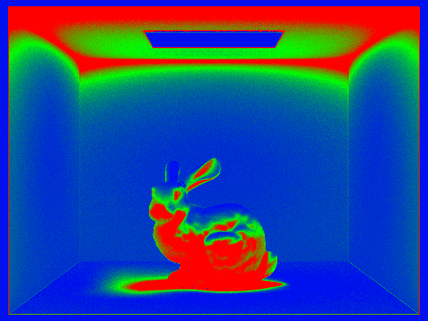
-s 2048 -a 64 0.05 -l 1 -m 5)
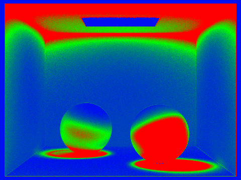
(Optional) Part 6: Extra Credit Opportunities
I did not implement extra credit features for this assignment.
Acknowledgement of AI
I used ChatGPT to help clarify concepts from lectures and troubleshoot bugs during implementation. I also used it to proofread my write-up for clarity. All implementation decisions were my own, and all images were rendered by my own implementation of the ray tracer.